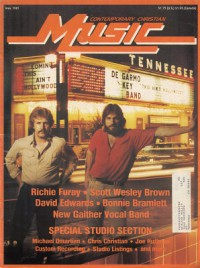

CMnexus
:
Contemporary Christian culture, music, and media.
Magazines
Profiles
Dove Awards
cmnexus.org
CM
nexus
→
Magazine list
→
CCM
→
Issues
Contemporary Christian Music
May 1981, vol. 3, iss. 11
< -- Prev
Issue list
Next -- >
Cover

Writers in this Issue
Marie Ameda
Paul Baker
Carolyn A. Burns
Peter Crescent
Don Cusic
Karen Marie Platt
Steve Rabey
Davin Seay
John W. Styll
Jerome Wakelin
Mike Warnke
DeGarmo and Key
Cover Feature:
"On The Road With DeGarmo & Key" by Davin Seay
DeGarmo and Key
Article:
Michael Omartian
by John W. Styll
Chris Christian
by John W. Styll
Joe Huffman
by Don Cusic
Records:
The Gaither Vocal Band
Richie Furay
by Steve Rabey
Passage (Jazz)
Talent:
"From SWB With Love" by Paul Baker
Scott Wesley Brown
David Noel Edwards
by Jerome Wakelin
Karen Lafferty
Jeff Pollard
by Peter Crescent
What's New:
Servant
-
Rockin' Revival
by Karen Marie Platt
Evie Karlsson
,
Pelle Karlsson
-
Teach Us Your Way
by Carolyn A. Burns
Daniel Hawkins
-
Daniel
by Karen Marie Platt
Jason Alvarez
-
Just Give Me Jesus
Glenn Garrett
-
It Is Written
by Carolyn A. Burns
Oreon
-
Oreon
by Karen Marie Platt
Dave & Dana
-
Right Track
In Concert:
Bonnie Bramlett
by Marie Ameda
Rough Mix:
by Mike Warnke
Relevant Links
Official web site of CCM
You may be able to find
CCM
in a library near you:
check
Worldcat
< -- Prev
Issue list
Next -- >
CMnexus
(noun)
The magazine index
of modern music
and Christianity
© 2011 CMnexus. Last updated August 2025.
Contact:
Rants and other correspondence to:
editor -AT- cmnexus
-DØT- org
About